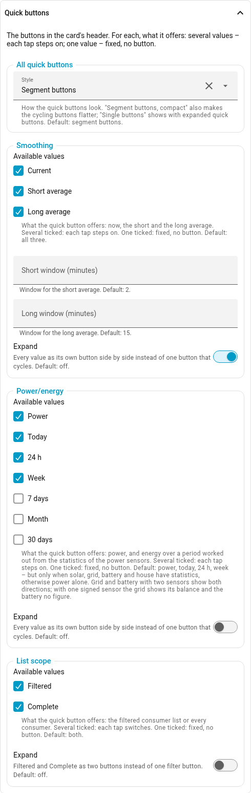
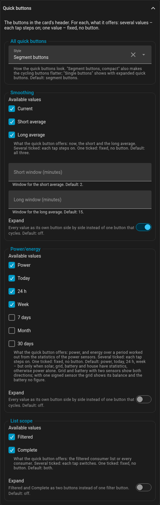

Quick buttons
The header has up to four quick buttons; each tap steps to the next value:
| Quick button | Values | Key | Default |
|---|---|---|---|
Smoothing |
Now, short average, long average |
|
all three |
Power/energy |
power, energy over a period |
|
|
PV scale |
shares on the ring, power relative to peak power - only with several PV sources |
|
both, as far as possible - |
List scope |
filtered list, every consumer |
|
both |
This is how they look by default - try them, each tap steps on (the card below them is left out here):
List the values a button should offer. One value means fixed: the button is gone and the card always shows that value, on every device and for every user - a card set up for energy stays one. Fixed values other than the live view are named in the header ("Ø 15 min", "Energy: Month"), so nobody takes them for a live reading.
In the editor each quick button has a part in the group Quick buttons: the ticks of its values and the switch Expand; at the top, Style for all of them.

view:
energy_periods: [month] # an energy card: always this month
modes: [current, avg_long] # no short average
list:
scope: [full] # always every consumerA button with several values starts with the value last chosen, on the very
first opening with the first one. Each card remembers for itself: the editor gives it
a memory_id, so two copies of the same card side by side can show different
things. A second card with the same id in the same view (a duplicate) keeps its
own values as well; a copy in another view or dashboard is apart anyway. Cards
written in YAML without a memory_id share what they remember, as before - add
any name of your own to separate them. What it remembers is tied to the view, so moving it
to another view, renaming the view or - for a view without a path of its own -
reordering the views starts it afresh once. Averages exist for power only:
without power in energy_periods the card never averages. In a period the
smoothing button is greyed out.
Expand and style. Instead of one button that steps on with every tap,
each quick button can show all its values side by side: in the editor the
switch Expand in its part, in YAML
view.expanded: [modes, energy_periods, pv_scales, scope]. A tap then picks a
value directly. Under All quick buttons, Style sets how they look:
Segment buttons (one bar per quick button, the chosen value filled),
Segment buttons, compact (the same bar, flatter - the cycling buttons too)
or Single buttons (every value its own button, a thin frame around the quick
button). Short of room, the quick buttons wrap, always as a whole.
Segment buttons, all expanded:
Segment buttons compact, only smoothing and power/energy expanded - the other two step on:
Single buttons, all expanded:
The energy default. With no energy_periods set, the card offers power,
today, 24 h and week - but only when solar, grid, battery and house all have
long-term statistics. It checks that once when it loads (metadata only, no
readings); otherwise it stays with power and says why in the browser console.
energy_periods: [power] switches the energy mode off.
The editor has a group per quick button; the last ticked value cannot be
unticked. The older view.show_selector: false still works and means every
quick button fixed on one value; the editor turns it into the lists above when
it opens.